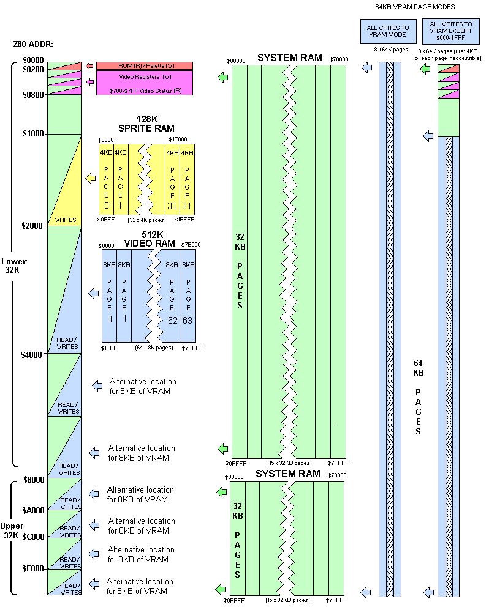
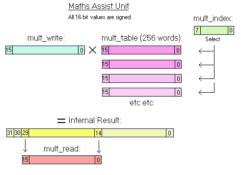
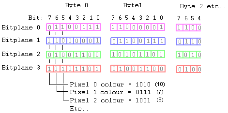
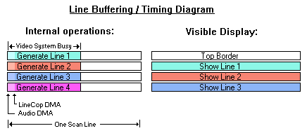
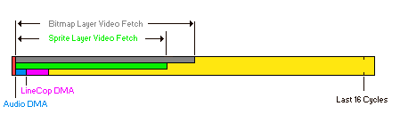

OSCA - An FPGA
Config For The V6Z80P
By Phil Ruston 2008-2012 - Last updated 29-09-2012 (OSCA v672)
OSCA (Old School Computer Architecture) provides a home-computer era hardware platform for
the V6Z80P. As well as basic memory and peripheral control, its features include bitmap and
character mapped displays, sprites, a raster line synchronized co-pro ("LineCop"), blitter,
hardware line draw and four channels of 8 bit digital sound.
Quick Links:
Hardware Control:
In OSCA, memory and peripheral controls are accessed via the Z80's In/Out Ports. Video
settings such as the palette, display controls, sprite registers etc are accessed via
locations in Z80 address space (these can be paged in and out as desired). Sections of
Z80 address space are also assigned to video RAM etc.
Z80 Address Space Overview:
As the V6Z80P has 512KB of system RAM (and the Z80 can only see 64KB at a time), OSCA
allows the user to select the sections of System RAM that appear in Z80 address space.
The page size is 32KB and both the lower and upper halves of the Z80 address space can
be assigned different pages of system RAM. In addition, the upper memory area can direct
CPU writes to an alternative page, making data copying quicker and easier.
Depending on the memory control settings, certain sections of Z80 address space
will - instead of system RAM - access components such as video/sprite memory, the video
palette etc.
Diagram of Z80 Address space options under OSCA (not to scale):

Z80 Address Space 'Partitions':
$0000-$07FF: First 2KB section of the lower 32KB System RAM Page. Or ROM, Palette, Video Registers,
Sprite Control Registers and Maths Table (this is the default mode)
$0800-$0FFF: The next 2KB Section of the lower 32KB System RAM page (Note: OSCA's default ROM code
stipulates that IRQ Mode 1 vector jumps to $A00, and NMI vector jumps to $A03)
$1000-$1FFF: The next 4KB Section of the lower 32KB System RAM page or a write-only 4KB page of
sprite definition RAM (note: Reads between $1000-$1fff always fetch data
from System RAM).
$2000-$3FFF: Next 8KB section of the lower 32KB system RAM page (or the default location
of the video RAM access window.)
$4000-$7fff: The remaining 16KB Section of the lower 32KB System RAM page
$8000-$FFFF: The Upper 32KB System RAM page
Paged RAM areas in Detail:
System Memory: The System RAM chip is 512KB. OSCA allows separate 32KB pages of
this memory to appear at Z80 $0000-$7fff and $8000-$ffff. The 32KB chunk of system RAM
that appears to the Z80 at $0000-$7FFF is set with the port "sys_low_page" and the 32KB
of system RAM that appears to the Z80 at $8000-$FFFF is set with the port "sys_mem_select".
If required, WRITES between $8000-$FFFF can access a different page to that of READS
in the same range - the write page is set with port "sys_alt_write_page", and this feature
is enabled with bit 4 of "sys_mem_select".
Writing to Z80 address space between $0000 - $07FF:
$0000 - $01FF: Write only Video Colour Palette or 512 bytes of system RAM*
$0200 - $03FF: Write only Video Control Registers or 512 bytes of system RAM*
$0400 - $05FF: Write only Sprite Control Registers or 512 bytes of system RAM*
$0600 - $07FF: Write only Maths Table or 512 bytes of system RAM*
Reading from Z80 address space between $0000 - $07FF:
$000 - $1FF: 512 byte boot ROM (contained in the FPGA) or 512 bytes of system RAM*
$200 - $6FF: 1280 Bytes of System RAM
$700 - $7FF: Video Status Register and Maths unit result or 256 bytes of system RAM*
* Bits in the port “sys_alt_write_page” control whether the ROM and hardware registers
or system RAM appears in locations $0000-$07ff. The default scheme (IE: when the
port sys_alt_write_page is clear) is:
$000-$1ff: Write palette but read from ROM
$200-$6ff: Write video registers but read from System RAM
$700-$7ff: Write video registers but read only the video status register and maths result.
Video Memory: Video memory is a seperate 512KB RAM chip. It is normally accessed by the
CPU through an 8KB window in Z80 address space. The window is located at $2000 by default but
can also be at $4000, $6000, $8000, $A000, $C000 or $E000. The location of this window is set
with the port "sys_vram_location" and the 8KB section of Video RAM that the window 'contains' is
selected by writing to the video register "vreg_vidpage" with bit 7 clear. To access video RAM
at the location specified (instead of normal System RAM), video RAM must be paged in by setting
bit 6 of the port "sys_mem_select".
Direct Video Write Mode: (see bit 5 of "sys_mem_select"). This settings allows a 64KB page of
video RAM to occupy the entire Z80 address space. This mode overrides all other paging options
and forces memory WRITES from the CPU to video RAM at the page selected with bits [5:3] of
“vreg_vidpage”). The CPU still reads data from ordinary system RAM (so that program code is always
accessible). Because devoting the entire 64KB of Z80 address space to video RAM severely limits the
CPU (calls, stack ops, IRQs, system variables etc are not possible) there is the option of excluding
the first 4KB of Z80 address space from Direct Video Write Mode (set bit 6 of "sys_mem_select"
as well as bit 5) - this allows access to the video registers and 2KB of system RAM at the
cost of losing access to the first 4KB of each 64KB video page.
Sprite Memory: Sprite RAM is another seperate RAM chip, this time 128KB in size. It is accessible to
the CPU via a 4KB window at $1000-$1FFF. To enable this window, set bit 7 of "sys_mem_select". Note
that in OSCA, sprite RAM is write only and reading from $1000-$1fff always returns values from system RAM.
The 4KB page of sprite RAM that is visible to the CPU is selected by writing to the video register
"vreg_vidpage" with bit 7 set.
IO
Ports:
$00-$2F: System Control / Peripheral / Audio Ports:
These port locations are mainly both readable and writeable. However, the read (IN) functions
can differ from the write (OUT) functions – see the individual port descriptions for details.
Port: $00 - Read / Write: "sys_mem_select"
Bit 0:3 - Upper 32KB memory page select (see table below)
4 - Use alternate page for upper memory writes **
5 - Set Direct Video Write Mode (All Z80 address space memory writes go to VRAM).
6 - Page in Video RAM at selected location (In DVW Mode: 1 = exclude $0000-$0FFF).
7 - Page Sprite RAM in at $1000-$1FFF for writes (Ignored in DVW Mode)
System RAM Upper Page Selection Table:
Bits: 3 2 1 0 | Area of System RAM paged into Z80 $8000-$FFFF
0 0 0 0 = $08000 - $0FFFF #
0 0 0 1 = $08000 - $0FFFF #
0 0 1 0 = $10000 - $17FFF
0 0 1 1 = $18000 - $1FFFF
0 1 0 0 = $20000 - $27FFF
0 1 0 1 = $28000 - $2FFFF
0 1 1 0 = $30000 - $37FFF
0 1 1 1 = $38000 - $3FFFF
1 0 0 0 = $40000 - $47FFF
1 0 0 1 = $48000 - $4FFFF
1 0 1 0 = $50000 - $57FFF
1 0 1 1 = $58000 - $5FFFF
1 1 0 0 = $60000 - $67FFF
1 1 0 1 = $68000 - $6FFFF
1 1 1 0 = $70000 - $77FFF / LineCop program area address $0000-$7fff*
1 1 1 1 = $78000 - $7FFFF / LineCop program area address $8000-$ffff*
Notes:
# Notice 0000 and 0001 both select SYS_RAM $08000-$0FFFF at Z80: $8000-$FFFF. This prevents
system RAM locations $00000-$07FFF being paged into the upper memory area. However, it is
possible to override this prohibition by setting the “Any Page Mode” bit (bit 5 of port
“sys_alt_write_page”) - selection 0000 will then select SYS_RAM $00000-$07FFF at Z80
$8000-$FFFF
* The System RAM area where Linecop programs need to be placed are normal memory
locations as far as the CPU is concerned, IE: they are not dedicated to the Linecop.
** When bit 4 (Alternate Write Page) is set, the UPPER 32KB page selection DURING
CPU WRITES is taken from Port $0B (sys_alt_write_page).
Port: $01 - Read: "sys_irq_ps2_flags" - Interrupt status flags and PS2 port line status:
Bit: 0 - Keyboard IRQ flag (1 = interrupt occurred)
1 - Mouse IRQ flag ("")
2 - Timer IRQ flag ("")
3 - Video IRQ flag ("")
4 - Keyboard Clock line status (input)
5 - Keyboard Data line status (input)
6 - Mouse Clock status (input)
7 - Mouse Data status (input)
Port $01 - Write: "sys_irq_enable"
Interrupt masks: Allow devices to interrupt CPU. (Note: The video IRQ enable bit is
in the video register vreg_rasthi)
Bit: 0 - Keyboard IRQ enable (1 = allow interrupt)
1 - Mouse IRQ enable ("")
2 - Timer IRQ enable ("")
3 - Audio IRQ enable ("")
4 - n/u
5 - n/u
6 - n/u
7 - Master IRQ enable (must be set to allow ANY interrupt to occur)
Port: $02 - Read: "sys_keyboard_data"
0:7 - Data byte received from keyboard
Port: $02 - Write: "sys_clear_irq_flags"
(Bits written with ones clear the relevant IRQ flag)
Bit: 0 - Clear Keyboard IRQ
1 - Clear Mouse IRQ
2 - Clear Timer IRQ
3 - n/u
4 - Clear Audio Channel 0 Loop IRQ Flag
5 - Clear Audio Channel 1 Loop IRQ Flag
6 - Clear Audio Channel 2 Loop IRQ Flag
7 - Clear Audio Channel 3 Loop IRQ Flag
Port: $03 - Read: "sys_mouse_data"
0:7 - Data byte received from mouse
Port: $03 - Write: "sys_ps2_joy_control"
Bit: 0 - Joystick port 0/1 select - determines which port is active.
1 - n/u
2 - n/u
3 - n/u
4 - Keyboard Clock Control output - (Set to 1 to PULL DOWN the signal)
5 - Keyboard Data Control output - ("")
6 - Mouse Clock Control output - ("")
7 - Mouse Data Control output - ("")
Port $04 - Read/write: "sys_serial_port"
Incoming or outgoing data byte for RS232 com port
Note: Reading clears the "serial byte received" flag (bit 6 in Port $05)
Port $05 - Read: "sys_joy_com_flags" - Joystick inputs and RS232 status
Bit: 0 - Up
1 - Down
2 - Left
3 - Right
4 - Fire 1
5 - Fire 2
6 - RS232 Byte received
7 - RS232 Output Buffer Busy
Port $05 - Write: "sys_sdcard_ctrl1"
Bit: 0:5 - n/u
6 - Enable FPGA to SD card data output
7 - SD card port's SPI speed: 0 = 250KHz, 1 = 8MHz
Port $06 - Read/Write: "sys_sdcard_ctrl2"
Bit: 0:1 - n/u (ignore / mask these bits when reading. No write function.)
2 – Read/Write SD card /CS line (active low)
3 – Read/Write SD card /Power control (active low)
4:7 - n/u (ignore / mask off these bits when reading. No write function.)
Port: $07 - Read: “sys_vreg_read” - Video status register (same value as address $700)
Bit: 7 - Interlace field 0 = short field, 1 = long field
6 - LSB of scanline count
5 - 60Hz mode (1 = NTSC config / VGA mode jumper installed and 50Hz not forced.)
4 - Blitter / linedraw status (1 = busy) check before changing relevant registers
3 - Raster IRQ status (for manual polling)
2 - Y Window (1 = display area, 0 = border)
1 - X Window (1 = display area, 0 = border) *
0 - Last line (VRT). Reads as 1 during the last line of each frame.
* Remember, in VGA mode each scanline's data is output twice at double the normal frequency.
This flag reflects the x-window of the normal PAL/NTSC ~15KHz scanline.
Port: $07 - Write: "sys_timer" - The timer internally counts *upwards* from this value
at 62.5KHz (ie: every 256 clock ticks) when it overflows, it sets the timer
IRQ flag, then reloads the count from the value that was written here.
Note: Writing to this port immediately sets the timer to the written value and clears
the internal prescaler count.
Port: $08 - Read: "sys_audio_flags"
Bit: 0 - Channel 0 is playing
1 - Channel 1 is playing
2 - Channel 2 is playing
3 - Channel 3 is playing
4 - Channel 0 has looped (IE: internal length countdown has reached 0)
5 - Channel 1 has looped (use bits 7:4 of port 2 to clear these flags)
6 - Channel 2 has looped ("")
7 - Channel 3 has looped ("")
Port: $08 - Write: "sys_audio_enable"
Bit: 0 - Channel 0 - 1 = Play audio, 0 = Stop audio
1 - Channel 1 - ("")
2 - Channel 2 - ("")
3 - Channel 3 - ("")
4:7 - n/u
Port $09 - Read: "sys_hw_flags"
Bit: 7 - Hardware version serial data (16 bit value)
6 - SD card serializer status (1 = busy)
5 - Video Mode jumper status (0 = TV mode, 1 = VGA mode)
4 - Config EEPROM serializer status (1 = data byte ready for read)
3 - Configuration PIC's RB7 port status
2:0 - n/u: Ignore / mask off these undefined bits
To read the hardware version word, set the address bus bits 11:8 to $0-$F when reading
this port (ie: use the "OUT (C),A" instruction, presetting register B with 0 to 15).
The bit addressed by B will appear in bit 7 of this port.
Port $09 - Write: "sys_hw_settings"
Bit: 0 - NMI switch inhibit. Default = 0, NMI switch enabled
1 - Reset switch inhibit. Default = 0, Reset switch enabled
2 – No effect (was originally PAL/NTSC mode select)
3 – Force VGA to 50Hz mode (no effect in TV mode)
4:7 - Not used
Port $0A - Read / Write: "sys_spi_port"
The SPI port is used by the V6Z80P to send bytes serially (MSB first, SPI mode 0) to
its SD Card interface. Also, serial data received from the card's D_out line appears
here for reading. See also: SPI speed setting in Port $05 and busy flag in port $09
Port $0B - Read/Write: "sys_alt_write_page" *
Bit: 0 - Write Page select Bit 0 - Relevant when bit 4 of Port 0 is set
1 - Write Page select Bit 1 - "" ""
2 - Write Page select Bit 2 - "" ""
3 - Write Page select Bit 3 - "" ""
(Note: uses same 32KB page selection table as "sys_low_page")
4 - "Write Palette/Read System RAM" - When set, CPU writes between $0-$1FF
are directed to the palette registers, whilst CPU reads in this memory
range return bytes from system RAM (instead of the ROM). This mode
overrides bit 6 status
5 – “Any page mode”. When set this allows the first 32KB of system RAM to be
paged into locations $8000-$ffff of Z80 address space when bits 0:3
of sys_mem_select are zero. (Originally this was prohibited.)
6 – "Read/Write First 512 bytes of System RAM" - When set, the system RAM
“underneath” the ROM/palette at $000-$1ff is accessible as normal System RAM
locations for read and write. Note: If bit 4 is set, this setting is ignored.
7 – “Access RAM under video registers” - When set, the system RAM “underneath”
the video registers at $200 - $7ff is accessible. As well as redirecting
CPU writes to system RAM this control causes reads in the range $700-$7ff
to return bytes from system RAM (READs from $200-$6ff return bytes from
system RAM whether this bit is set or not). This means that the video
status register and maths unit result word is not available (however,
the video status register can always be read from port 7 - “sys_vreg_read”)
* To ensure the ROM is paged in upon reset and the system can start, this port register
is reset to $00 when the reset button is pressed.
Port $0C - Read: No function
Port $0C - Write: "sys_baud_rate"
Bit: 0 - Set serial port RS232 comms speed: 0 = 57600 BAUD, 1 = 115200 BAUD
Port $0D - Read: "sys_eeprom_byte"
This port contains data bytes from the SPI FPGA configuration EEPROM, which
can be read under CPU control. It should be read only when the "serializer
status flag" (bit 4 of port "sys_hw_flags") is 1. Reading this port clears
the internal bit count and status flag.
Handshaking: When a databurst has been initiated (see PIC comms section) the
PIC issues a new byte every time the PIC CLOCK (bit 1 of "sys_pic_comms") is raised.
Port $0D - Write: "sys_pic_comms"
Bit: 0 - Write to Configuration PIC port RB1 (data to PIC)
1 - Write to Configuration PIC port RA5 (clock to PIC)
2:7 - Not used, write with zeroes
Port $0E - Read/Write: "sys_io_pins" (see data direction in port $0F)
Bit: 0 - Read/Write data bit for IO pin A
1 - Read/Write data bit for IO pin B (pulled up)
2 - Read/Write data bit for IO pin C (on PCBs that support it)
3:5 - n/u
6 - Reads: RESET switch status (pulled up)* - Write: N/A
7 - Reads: NMI switch status (pulled up)* - Write: N/A
* Only relevant when Reset / NMI functions are disabled by port 9 bits 0:1
Port $0F - Read: No function
Port $0F - Write: "sys_io_dir"
Bit: 0 - Data direction for IO pin A (0 = output, 1 = input)
1 - Data direction for IO pin B ( “” )
2 - Data direction for IO pin C (on PCBs that support it)
3:7 - n/u
Port $20 – Read / Write: “sys_low_page”
Bit: 0:3 – Lower 32KB page select
4:7 – Not Used – mask / ignore these undefined bits.
This port selects which 32KB page from the 512KB system RAM appears at Z80 $0000-$7fff
(see table below). Bear in mind the ROM/Palette, video registers and sprite page will
still occupy Z80 address space locations: $0000-$01ff, $0200-$07ff and $1000-$1fff
respectively regardless of which 32KB page is selected UNLESS these locations are
specifically banked out of the address space with their respective control bits.
System RAM Lower Page Selection Table:
Bits: 3 2 1 0 | System RAM paged into Z80 $0000-$7FFF
0 0 0 0 = $00000 - $07FFF
0 0 0 1 = $08000 - $0FFFF
0 0 1 0 = $10000 - $17FFF
0 0 1 1 = $18000 - $1FFFF
0 1 0 0 = $20000 - $27FFF
0 1 0 1 = $28000 - $2FFFF
0 1 1 0 = $30000 - $37FFF
0 1 1 1 = $38000 - $3FFFF
1 0 0 0 = $40000 - $47FFF
1 0 0 1 = $48000 - $4FFFF
1 0 1 0 = $50000 - $57FFF
1 0 1 1 = $58000 - $5FFFF
1 1 0 0 = $60000 - $67FFF
1 1 0 1 = $68000 - $6FFFF
1 1 1 0 = $70000 - $77FFF / LineCop program area ($0000 - $7fff)
1 1 1 1 = $78000 - $7FFFF / LineCop program area ($8000 - $ffff)
Port $21 – Read - No function
Port $21 - Write: “sys_vram_location”
Bit: 0:2 - Location of the video memory access window in Z80 address space (see table)
3:7 – Not Used – write with zeroes
Bits: 2 1 0 | VRAM Location:
0 0 0 = $2000 *
0 0 1 = $2000 *
0 1 0 = $4000
0 1 1 = $6000
1 0 0 = $8000
1 0 1 = $a000
1 1 0 = $c000
1 1 1 = $e000
Note: The video window is paged in and out of Z80 address space with bit 6 of "sys_mem_select"
* 000 and 001 both set the VRAM window location at Z80 address $2000 (It is not possible to set
the VRAM window to Z80 $0000)
Ports $22 - $27: Used by sound system, see following section.
Sound
System Detail:
Note: The audio channel location registers were expanded to 18 bit in OSCA v672. Previously,
only 128KB of System RAM ($20000-$3FFFF) was accessible to the audio system.
Port assignments:
Ports $10-$1F and $22-$27 are assigned to the audio functions:
Port $10 - "audchan0_loc" Location of sound wave in System RAM Bits [bits 16:1 of sample address] (16 bit register)
Port $11 - "audchan0_len" Length of sound wave (in words) (16 bit register)
Port $12 - "audchan0_per" Period of sound wave (number of 16MHz clock ticks between sample bytes) (16 bit register)
Port $13 - "audchan0_vol" Volume of sound wave ($00-$40) (Linear scale: $40 = maximum volume) (8 bit register)
($14-$17: Same for channel 1 - "audchan1_loc", "audchan1_len", "audchan1_per", "audchan1_vol")
($18-$1b: Same for channel 2 - "audchan2_loc", "audchan2_len", "audchan2_per", "audchan2_vol")
($1c-$1f: Same for channel 3 - "audchan3_loc", "audchan3_len", "audchan3_per", "audchan3_vol")
Port $22 - 'aud_panning' (8 bit register)
Bit 0:3 - Select which channels go to the right side
4:7 - Select which channels go to the left side
(Each bit position = one channel, IE: bit0=channel0, bit1=channel1 etc)
Port $23 - Not implemented
Port $24 - 'audchan0_loc_hi' Location (high) of sound wave in System RAM [Bits 18:17] for Channel 0
Port $25 - 'audchan1_loc_hi' Location (high) of sound wave in System RAM [Bits 18:17] for Channel 1
Port $26 - 'audchan2_loc_hi' Location (high) of sound wave in System RAM [Bits 18:17] for Channel 2
Port $27 - 'audchan3_loc_hi' Location (high) of sound wave in System RAM [Bits 18:17] for Channel 3
(These 4 location_high ports are 8 bit registers - only bits 0:1 are used)
Notes:
The sound location registers are 18 bits long in total and refer to WORD addresses (not
byte addresses) in System RAM (samples need to placed at word boundaries). Basically you
write (the actual RAM address / 2) into the location registers.
Samples must be an even number of bytes in length - you write the length in WORDS into
the Length registers (IE: Actual byte length/2). Maximum sample length is therefore 128KB.
The location (low), length and period values are 16 bit registers and should be updated
by using the Z80 "OUT (C),r" instruction where C is the port number, r holds the low 8 bits
of data and B holds the high 8 bits of data. The volume and location (high) ports are 8 bit
registers and can be updated with the normal "OUT (n),A" instruction if desired.
The volume is a linear scale value (range: $00 = silence to $40 = full volume).
The sound sample data needs to be in signed 8-bit format and located in System RAM
(it is read by the hardware using DMA). The audio hardware ignores any memory paging
settings and always reads directly from the system RAM when fetching data.
The sound system operates in a similar fashion to that of the Amiga Hardware, ie: You
set the location, length, period and volume of a channel, then start the channel
playing with the relevant "sys_audio_enable" port bit. Once the channel is playing,
its Location and Length registers can be updated - the channel will only fetch the
new values once its original length value has counted down to zero (or you stop
the channel for a while and restart it). If the registers are not changed, the
channel simply loops around playing the same sample data until it is stopped.
Because of the way the sound hardware pre-fetches sample data, some care needs
to be taken when setting up the registers. The recommended audio register setup
procedure is as follows:
1. Wait for post-audio DMA time (EG: wait for bit 6 of "sys_vreg_read" to change)
2. Stop the relevant audio channel(s) and write location, length, period and volume.
3. Wait for next post-audio DMA time (IE: At least one scanline delay)
4. Start the relevant audio channel(s)
(Once a sample is playing, the volume and period registers can generally be updated
on the fly without special regard to the DMA timing)
It's possible to use an interrupt to seamlessly switch between two or more sample
buffers in order to play long samples without worrying about the exact timing. To
do this you would start a channel playing, reload it with the second buffer ready
for the first loop as normal, and then set up the audio interrupt so that it occurs
upon the first loop (IE: just as the second buffer starts to play). In the IRQ
service routine, you would set the channel location and length to point back to
the first buffer, and on subsequent IRQs switch between the two buffers.
Note: The four audio loop flags are OR'd into a single interrupt source. It is up
to the IRQ service routine to read bits 4:7 of the "sys_audio_flags" port, see
which bits are set (and clear them on exit from the IRQ).
Other sound related ports (see port breakdown detail above):
Port $01 ("sys_irq_enable")- to enable/disable the audio IRQ
Port $02 ("sys_clear_irq_flags")- to clear audio IRQ loop flags
Port $08 ("sys_audio_enable" / "sys_audio_flags") - to enable channels / read loop flags.
CALCULATING THE AUDIO PERIOD VALUE:
The period value is not the same as the Amiga uses, however, it has 4 times the resolution
so a close match value can be obtained if desired.
Period = 16,000,000 / desired sample output rate
EG: To playback at 22050Hz, set the period to (16,000,000/22050) = 725
The minimum period value is around 512 (corresponding to a sample rate of ~31KHz) - this is
because the hardware only pre-fetches 2 samples during DMA per scanline (and there is a couple
of cycles overhead etc)
For pure tones, the output frequency depends on the number of samples in your waveform
that constitute one cycle, so if the sample has EG: 16 bytes in one cycle, the period
value required to play it at a desired frequency is calculated thus:
Period = 16,000,000 / (samples per cycle * frequency)
Panning:
The default set-up is for channels 0 and 2 to go to the left side, whilst channels 1 and 3
go to the right side, but by writing to port $22 "sys_audio_panning" all 4 channels can be
individually directed to the left, right or both sides.
Hardware
Maths Assist – multiply /
scale unit
The maths assist unit consists of 3 elements: a) A 256 word table which can hold values (such as
sine constants), b) A 16bit value that is multiplied by the values in the table and c) An index
byte to select which word in the table to multiply by. The multiplication is a sign extended
16 bit x 16 bit operation, but only 16 bits from the resulting 32 bit longword are available to
be read, these bits are taken from bit 29 to bit 14. (Therefore care should be taken with the
values used in the multiplication operation to a) get correct results for unscaled multiplies
and b) prevent overflows.)

The maths unit can be used for fast scaling of values using just the first entry of the table.
For example you could write some value to be scaled into the mult_table(0), set the mult_index
at 0 and write the scaling factor from 0 to 16384 into “mult_write”. The output from “mult_read”
will be mult_table(0) * mult_write/16384
To use the maths unit as a simple 256 x 16bit look-up table, write your 16 bit words in the
mult_table, put 16384 into mult_write and simply select the value by setting mult_index and reading
from mult_read.
To do an unscaled "multiply by a constant" (using only a single entry in the table) you need
to adjust the multiplier and multiplicand to counter the scaling of the output. EG: To multiply
$0087 by $0025 you could write $8700 into mult_write - (IE: a simple LSB/MSB byte swap) and
$0940 into mult_table(0) (IE: $25 * $40). As the second word needs more processing, this would
be your pre-set constant (you could fill the rest of the table with other constants if desired).
The maths unit makes sin/cos calculations straightforward: Write the table with 256 sine values
(maximum positive amplitude = 16384), set the multiplier word to coordinate x and the index byte
to the angle a, the resulting word will be SIN (a) * x
Registers / locations used by the maths unit:
$208-$209 : "mult_write" 16 bit multiplier (word - write only)
$20A : "mult_index" Maths table index (byte - write only)
$600-$7FF : "mult_table" Data table (word - write only)
$704-$705 : "mult_read" Maths unit result (word - little endian - read only)
The
Video System:
There is 512KB of “background video” RAM available (separate to sprite, audio and system memory).
It is normally accessible to the CPU in 8KB pages (at Z80 address $2000, $4000, $6000, $8000,
$A000, $C000 or $E000 depending on the port setting "sys_vram_location") with the page selected
by the video register "vreg_vidpage". However, a special write-only mode also allows the entire Z80
address space to be mapped onto a 64KB page of video RAM.
There are two main video modes, bitmap and tilemap - both allow up to 256 colours. The display
is normally non-interlaced, PAL ~50Hz or VGA/NTSC ~60Hz (there is an option to force VGA to
non-standard 50Hz). CPU access TO VIDEO MEMORY whilst the display window is being generated is
blocked by the video system. The different video modes affect how long the CPU is kept
waiting - Dual Playfield tilemap mode is the most demanding.
BITMAP "CHUNKY" MODE:
In standard chunky bitmap mode pixel data is fetched in a simple 1 byte = 1 pixel
fashion (it is called "chunky" as all the bits for each pixel come from the same
'chunk' - IE: location - in memory).
The byte fetched from VRAM represents an index in the video palette, therefore a $00
shows a “palette entry 0” coloured pixel, $01 shows a “palette entry 1” coloured pixel
and so on. Data is fetched linearly from VRAM left to right, top to bottom of the screen.
The data-fetch start address can be manipulated to achieve smooth scrolling effects.
Line draw system:
Fast line draws (125ns per 256 colour pixel) are possible in chunky mode. The
hardware requires Bresenham constants, octant number, video start address and
length of line to be set up in the line draw registers, then the hardware carries
out the algorithm. The registers are doubled up, allowing line set-up data for a
new line to be loaded up whilst the previous line is being drawn.
Flood mode: (Simplified in OSCA 672)
Chunky mode also offers "pixel flooding" (see bit 6 of vreg_vidctrl) which
repeats the last pixel colour to achieve flood fill effects. In this mode,
the hardware XOR's each new pixel with the value of the last. The stored
colour is reset to zero at the start of each scan line.
Pixel Expand:
Finally, in chunky mode pixels can be horizontally expanded from 1 to 8 times
(see bit 3 of "vreg_vidctrl" and bits 0:2 "vreg_yhws_bplcount")
BITMAP "PLANAR" MODE:
In planar mode the display can have up to 8 bitplanes which are internally combined
to form a palette index for each pixel. As the number of bitplanes can be set
(see vreg_yhws_bplcount), the maximum number of colours on screen (without reloading
the palette registers mid-screen) can be 2,4,8,16,32,64,128 or 256. This can offer
efficiencies in terms of video memory use and update speed. The main disadvantage is
that fine pixel-level access is more difficult. The bitplane location address registers
can be manipulated to achieve scrolling effects etc. (Fine horizontal pixel scrolling
is provided via a hardware scroll register (vreg_xhws).
The diagram below shows how bitplane data is combined to form a pixel's palette index:

Bitplane Location Registers and Modulo:
To set the location of display data, write to the Bitplane Location Registers at $240-$27F
(see register index for details). The location registers need only be written once, an internal
counter adds an offset internally as the frame is built up (this offset register can be reset at
any time). For convenience, there are in fact two sets of location registers - the video hardware
uses the set determined by bit 5 of the video register "vreg_vidctrl".
A modulo register is provided also - this can be used to skip bytes at the end of each scan
line - Useful for hiding new scroll data, interlaced displays etc.
TILE-MAP MODES:
In tile-map mode the display is built up in a less direct manner: The hardware reads
a look-up table to display a predefined block for each tile position. The blocks can
be 8x8 or 16x16 pixels in size (defined in a simple, linear “1 byte = 1 pixel
colour index” left to right, top to bottom fashion). Dual playfield capability is
provided so that one map can be overlaid on top of the other (pixels of value 0
are taken as transparent). The playfield priority is selectable. Each playfield
can be offset by 0-15 pixels in the vertical or horizontal direction allowing
smooth scrolling. There are two map buffers per playfield which allows double
buffering if desired. The registers vreg_vidctrl, vreg_ext_vidctrl, vreg_xhws
and vreg_yhws_bplcount contain the control bits for the tilemap modes.
LEGACY AND EXTENDED TILE MODES:
The most basic OSCA tilemap mode limits tiles to 16x16 pixels, indexed with single
bytes allowing a maximum of 256 different tiles. Two sets of tile definitions are
available with 248 and 256 tile images respectively (Tile set A has fewer definition
blocks available because the video memory for blocks 0-7 (VRAM $0-$7ff) is assigned
for use as the four available tile maps.) This simplistic system is referred to as
“Legacy Tilemap mode”. Extended Tile Mode provides more flexibility and may be a
better choice for new programs.
In Legacy Tile Mode: The Video RAM is organized as follows:
$00000 - $001FF: Playfield A - tilemap 0
$00200 - $003FF: Playfield A - tilemap 1
$00400 - $005FF: Playfield B - tilemap 0
$00600 - $007FF: Playfield B - tilemap 1
$00800 - $0FFFF: Tile definition set A (Tile defs 0-7 cannot be used)
$10000 - $1FFFF: Tile definition set B (All 256 tiles available)
The horizontal size of the tile map buffer is always 32 bytes, no matter what
the size of the display window.
EXTENDED TILE MODE:
In Extended Tilemap Mode (IE: when bit 0 of vreg_ext_vidctrl is set), tiles are
indexed by 2 bytes and can be 16x16 or 8x8 pixels. There is a single set* of 2048
16x16 tiles or 8192 8x8 tiles (the “tile set select” bits used in legacy mode have
new meanings in Extended Tilemap Mode.) The tile maps are located between at $70000-
$73fff in video memory, well clear of the tile definitions which are located at
VRAM $0 (The memory space used by the tile maps will produce garbage tiles if
indexed). Bits 6:7 of the upper byte of the tile indices control x_mirror (Bit 6)
and y_flip (Bit 7) of each tile definition.
* Although the tile definitions are normally indexed in a straightforward linear manner,
there is an option to switch between the definitions held at VRAM $0-$3FFFF and $40000-$7ffff.
In Extended Tile Mode with 16x16 tiles: VRAM is organised as follows:
$00000-$6FFFF: Tile definitions (256 bytes each)
$70000-$701FF: Playfield A Buffer 0 tilemap LSBs
$70200-$703FF: Playfield A Buffer 1 tilemap LSBs
$70400-$705FF: Playfield A Buffer 0 tilemap LSBs
$70600-$707FF: Playfield A Buffer 1 tilemap LSBs
$70800-$709FF: Playfield B Buffer 0 tilemap MSBs (incl. tile flip control)
$70A00-$70BFF: Playfield B Buffer 1 tilemap MSBs ("")
$70C00-$70DFF: Playfield B Buffer 0 tilemap MSBs ("")
$70E00-$70FFF: Playfield B Buffer 1 tilemap MSBs ("")
In 16x16 tilemap mode, the width of each horizontal map line is 32 bytes no matter what the
size of the display window. Each tilemap has room for 16 rows of tiles (ie: a 256 scanline display),
however when using vertical hardware scroll, the maximum y window should be 240 lines to mask
off the last tile-line (where the internal tilemap line pointer wraps back to 0)
In Extended Tile Mode with 8x8 tiles: VRAM is organised as follows:
$00000-$6FFFF: Tile definitions (64 bytes each)
$70000-$707FF: Playfield A Buffer 0 tilemap LSBs
$70800-$70FFF: Playfield A Buffer 0 tilemap MSBs (incl. flip control)
$71000-$717FF: Playfield A Buffer 1 tilemap LSBs
$71800-$71FFF: Playfield A Buffer 1 tilemap MSBs (incl. flip control)
$72000-$727FF: Playfield B Buffer 0 tilemap LSBs
$72800-$72FFF: Playfield B Buffer 0 tilemap MSBs (incl. flip control)
$73000-$737FF: Playfield B Buffer 1 tilemap LSBs
$73800-$73FFF: Playfield B Buffer 1 tilemap MSBs (incl. flip control)
(Notice that the LSB/MSB arrangement is slightly different to that of the 16x16 mode.)
In 8x8 tilemap mode, the width of each horizontal map line is 64 bytes no matter what the
size of display window. The hardware scroll registers still provide a 0-15 pixel offset.
Each tilemap has room for 32 rows of tiles (ie: a 256 scanline display), however
when using vertical hardware scroll, the maximum y window should be 248 lines to
mask off the last tile-line (where the internal tilemap line pointer wraps back to 0)
Sprites:
There is 128KB of dedicated RAM for sprite definitions (enough space for 512 16x16 256
colour sprite blocks). This (write only) memory is accessed in 4KB pages through a
window in Z80 address space located at $1000-$1FFF. The 4KB page from within the total
128KB sprite RAM is selected by the register vreg_vidpage (write the page number 0-31,
with bit 7 set). The 4KB window is opened and closed with Bit 7 of the port "sys_mem_select".
(Note: When the CPU reads from $1000-$1FFF, data is ALWAYS returned from system RAM
regardless of the setting in sys_mem_select.)
Sprite definition memory accepts writes at full speed when the sprites are disabled.
When sprites are enabled, writes from the CPU are forced to wait until the sprite
hardware releases the RAM buses. The length of the wait during contention depends
how busy the sprite hardware is on any given scanline. Access to the sprite control
registers is never subject to contention.
Each sprite definition block is 256 bytes long, with pixel data in a linear format
"1 byte = 1 pixel" fashion, left to right, top to bottom of the sprite definition.
Colour index zero is considered transparent by the sprite video hardware. Sprites
are always 16 pixels wide but can be up to 240 pixels tall (the height of an
individual sprite (in 16 line blocks) is set by its control register). The additional
definition data for sprites taller than 16 lines comes from the blocks of sprite data
following the specified sprite definition. Sprite images can be individually mirrored
horizontally by setting a bit in their control registers - see detail below.
There is enough time on any one scanline to show 55 sprites, but there are 127 sprite
control registers. Therefore, this can be thought of as hardware multiplexing: Because
it is uncommon for 55 sprites to appear on the same line, sprite images from all the
registers will normally be displayed if spread throughout the entire display window.
A double buffering mode allows half the sprite registers to be updated whilst the
sprite hardware builds the display from the other half (the buffers are typically
switched by the user's program each frame). This removes possible on-screen glitches
and/or the need to dump data to the sprite registers off-screen. Bits in vreg_sprctrl
are used operate this mode.
Sprite to Background Priority:
In the most basic mode, non-zero sprite pixels appear in front of all background
display data. However there are controls to allow sprites to be masked by sections
of the background colour palette. For the purposes of priority, the background palette
is divided into 16 x 16 colour groups, sprites can then appear in front or behind
one or more of these groups. There are two sets of background mask selections,
sprites use the mask set based on bit 7 of their pixel colours. To dynamically
switch a sprite from one set of masks to the other (EG: to move it from foreground
to background) bits from a sprite’s control register can be used to modify its
pixels’ MSBs (without this it would be necessary to have copies of the same sprites
drawn using different colour indexes and switch the definitions.)
The main priority control “interleave mode” is bit 1 of vreg_sprctrl, when this bit
is zero, sprite pixels appear in front of all background data. When this bit is
set to one, sprites use their pixel colour index MSBs to select one of the two
background mask sets.
To assist with individual sprite priorities, an option called "modify_colour_MSBs"
is available, this is enabled by bit 4 in vreg_sprctrl. When set, the MSB of each
individual sprite's height control is sacrificed and transferred the MSB of all
the sprite’s pixel colours. Of course, the sprite would normally change colour
if the palette indices 1-127 and 129-255 are different, therefore another control
bit is available that forces sprites only to be shown using colours 1-127 (IE:
their pixel colour MSBs are reset to zero, but only after the priority has been
determined). This option is called “fix_colours_low” and is enabled with bit 6
of vreg_sprctrl. (As these options sacrifice the MSB of the sprites’ height settings,
it limits how tall a sprite can be.)
One last sprite feature is "matte mode" - this forces all non-zero pixels in a sprite
to a single colour, an effect which is sometimes used in games to indicate a character
has taken a hit. The feature is enabled with bit 5 in vreg_sprctrl, afterwards bit 2
of each sprite’s height control register is used to switch individual sprites to single
colour. Internally, this feature sets bits 0:6 of the sprite pixels (but not bit 7, as that
could affect its priority). Therefore all the sprite’s pixels will be shown as colour
127 or colour 255 depending on the sprite’s original bit 7 (if in doubt simply make
palette colours 127 and 255 the same). As another bit of the sprite height control
register is sacrificed, sprites are limited to 16/32/48/64 pixels tall (also 128,144,
160,176 if "modify_colour_MSBs" is not required.)
In general, bear in mind the sprite layer is generated separately (and concurrently)
to the background, and because priorities work solely on colour indexes care must be
taken (especially in dual playfield tile mode) when designing the colour palette and
the order in which sprites are assigned to registers.
Background priority mask registers:
The mask registers are located at $280-$28F. Only two bits of each location are used:
Bit 0 is the mask for “level 0” (where a sprite’s colour index MSB is 0) and Bit 1 is
the mask for “level 1” (where a sprite’s colour index MSB is 1). The register at $280
holds the masks for background colours 0-15, the register at $281 holds the masks for
background colours 16-31, the register at $282 holds the masks for background colours
32-47 and so on.
Where each register mask bit is zero, the range of colours it will represents will
appear behind sprites. Where a mask bit is one, the range of colours it represents
will appear in front of sprites.
An example:
$280: (background 00-0f) = 00b $288: (background 80-8f) = 01b
$281: (background 10-1f) = 00b $289: (background 90-9f) = 01b
$282: (background 20-2f) = 00b $28A: (background a0-af) = 01b
$283: (background 30-3f) = 00b $28B: (background b0-bf) = 01b
$284: (background 40-4f) = 00b $28C: (background c0-cf) = 01b
$285: (background 50-5f) = 00b $28D: (background d0-df) = 01b
$286: (background 60-6f) = 00b $28E: (background e0-ef) = 01b
$287: (background 70-7f) = 00b $28F: (background f0-ff) = 01b
In the above example (when interleave mode is enabled) sprites with pixel indexes
in the range 00-7f will be occluded by background colours 80-ff. This is the default
OSCA setting.
Sprite Control Registers (4 bytes per sprites)
Memory addresses of registers:
$400-$5fb (127 registers - single set of sprite control registers)
or
$400-$4fb (Register bank 0) (63 registers - double buffered register mode)
$500-$5fb (Register bank 1) (63 registers - double buffered register mode)
Each sprite register is 4 sequential bytes:
$00 : X coordinate (low 8 bits)
$01 : Bits 7:4 = Height of sprite (in blocks of 16 lines) - If the four height
bits are zero, the sprite is 240 pixels tall.
3 = X Mirror enable
2 = Definition MSB
1 = Y coordinate MSB
0 = X coordinate MSB
$02 : Y coord (low 8 bits)
$03 : Sprite definition number (low 8 bits)
Coordinates:
X and Y coordinates are 9 bits in size, the MSBs are stored in the second byte of the register.
The coordinate positions are fixed and are not relative to the display window position,
IE: the X/Y coordinates are the same absolute positions as those used by the window
location / size set up. (X sprite positions are actually one pixel less than x_window_start
position).
Size:
As mentioned, sprites are always 16 pixels wide, but can normally be up to 240 pixels high,
with a granularity of 16 lines (as set by bits 7:4 of the second byte in each sprites
control register). However, some height control bits can be sacrificed for other features:
If "modify_colour_MSBs" mode is enabled (bit 4 in vreg_sprctrl = 1) the four bits normally
assigned to height work as follows:
bit 7 - Use priority mask set 0 or 1
6 - Height (bit 2)
5 - Height (bit 1)
4 - Height (bit 0)
Therefore in this mode sprites can be 16,32,48,64,80,96,112 (or 240 when the three height
bits are all zero) lines tall.
If "matte_mode" is enabled (bit 5 in vreg_sprctrl = 1) the four bits normally assigned to
height work as follows:
bit 7 - Height (bit 3)
6 - Force non-zero colours to 127 or 255
5 - Height (bit 1)
4 - Height (bit 0)
Therefore in this mode sprites can be 16,32,48,64, and 128,144,160,176 lines tall
(64 lines are used when bit 0 and 1 are zero)
If both "matte_mode" and "modify_colour_MSBs" modes are selected, the four bits normally
used for height are interpreted as follows:
bit 7 - Use priority mask set 0 or 1
6 - Force non-zero colours to either 127 or 255
5 - Height (bit 1)
4 - Height (bit 0)
In this mode sprites can be 16,32,48,64 lines tall (64 lines are used when bit 0 and
1 are zero).
Display
Window:
The positions of the edges of the display window are programmable (which of course
also sets the size of the display). There are 4 bits of precision for each of the left,
right, top and bottom edges. The horizontal resolution is 16 pixels and the vertical
resolution is 8 lines. Values obtained from the tables below should be written to the
register vreg_window (note that both vertical and horizontal settings share this same
register - the horizontal/vertical function is switched by bit 2 of vreg_rasthi - see
the example at the end of this section).
Positioning a display window within the maximum possible display area:
X start X stop
! ! ! !
! ! V V
!---!------------------------------------.
! ! !
! ! “BORDER” !
! ! ------------------------- ! <- Y start
! ! ! ! !
! ! ! ! !
! ! ! ACTIVE ! !
! ! ! DISPLAY WINDOW ! !
! ! ! ! !
! ! ! ! !
! ! ! ! !
! ! ! ! !
! ! ! ! !
! ! ------------------------- ! <- Y Stop
! ! !
! !<-- MAX VISIBLE AREA OF TV SCREEN-->!
!---'------------------------------------'
! !
^ ^
Sync etc
Horizontal Positions:
There are theoretically 512 horizontal pixel positions along a scan line. The x_start
values are n * 16 pixels in from the left hand side. The x_stop values are n * 16 pixels
from theoretical pixel 256 (note: this is not the exact centre of the TV screen, due to
sync periods etc). When writing to the vreg_window register, the left side setting
nybble goes in bits [7:4] and the right side setting nybble goes in bits [3:0]
Display Window Register "vreg_window" Values:
Nybble X_start X_stop
$0 = 00 * 256
$1 = 16 * 272
$2 = 32 * 288
$3 = 48 * 304
$4 = 64 * 320
$5 = 80 * 336
$6 = 96 352
$7 = 112 368
$8 = 128 384
$9 = 144 400
$a = 160 416
$b = 176 432
$c = 192 448
$d = 208 464
$e = 224 480
$f = 240 496
* = Outside of the normally visible TV frame - there's no point using these values.
Note: Width of display in pixels = ((x_stop nybble + 16) - x_start nybble) * 16
Vertical Positions:
The Y_start value refers to the position of the top line of your active display window.
(This is counting from 16 lines above the first visible scanline of the screen - these
"redundant" 16 lines allow sprites to be masked off at the top of the display). The
Y_stop value refers to the position of the last line of your display window, also
counting from 16 lines above the first visible scanline of the screen.
Values for Y_Start (vreg_window register bits 7:4):
Nybble Lines from 1st visible (Sprite Y coord)
$0 = -16 * $01
$1 = -8 * $09
$2 = 0 $11
$3 = 8 $19
$4 = 16 $21
$5 = 24 $29
$6 = 32 $31
$7 = 40 $39
$8 = 48 $41
$9 = 56 $49
$a = 64 $51
$b = 72 $59
$c = 80 $61
$d = 88 $69
$e = 96 $71
$f = 104 $79
* This is above the top of the visible screen, these values should not normally be used.
(IE: A value of $2 written to the Y_start register gives the highest available start
line on PAL/NTSC/VGA displays.)
Values for Y_Stop Window (vreg_window register bits 3:0):
Nybble Lines from 1st visible (Sprite Y coord)
$0 = 144 $a1
$1 = 152 $a9
$2 = 160 $b1
$3 = 168 $b9
$4 = 176 $c1
$5 = 184 $c9
$6 = 192 $d1
$7 = 200 $d9
$8 = 208 $e1
$9 = 216 $e9
$a = 224 $f1
$b = 232 $f9
$c = 240 $101
$d = 248 $109
$e = 256 $111
$f = 264 ** $119
** This is below the bottom of a PAL display and should not normally be used.
Note: Total lines in display = (Y_Stop nybble * 8) + 160 - (Y_Start's nybble * 8)
VGA/NTSC/PAL Mode notes:
Because the different TV/VGA modes have various numbers of scanlines making up the
display, a window vertically centred in one display mode may not be central in other
modes. If this is important, a constant (depending on the display mode) can added to
the start/stop settings plus all sprite y coordinates and scanline-based operations.
The 60Hz mode flag in the Video Status Register can assist if the correction is to
be done automatically, else a display adjust routine can be provided in user programs.
Example code: Display Window setting:
To set the vertical start and stop positions of the display window, first write
vreg_rasthi with bit 2 clear, then write an appropriate value from the tables
above to vreg_window. To set the horizontal positions, write vreg_rasthi with
bit 2 set, then write an appropriate value for the horizontal setting to vreg_window.
EG:
ld a,$00
ld (vreg_rasthi),a ; selects vertical window setting
ld a,$5a
ld (vreg_window),a ; sets vertical window size/position (200 lines)
ld a,$04
ld (vreg_rasthi),a ; selects horizontal window setting
ld a,$8c
ld (vreg_window),a ; sets horizontal window size/position (320 pixels
Blitter:
OSCA’s blitter can transfer data around video memory much faster than the CPU (it copies one
byte every 2 system clocks, compared with the CPU's LDIR instruction @ 1 byte per 21 clocks).
It can work in ascending or descending address order and also has modulo registers so that
rectangular areas within larger overall arrays can be shifted in one go. It can, however,
only operate within video memory. There is the option to skip the writing of source bytes
that equal zero, this is mainly useful in Chunky pixel mode where it can be used to mask
out "transparent" pixels (eg: drawing "bobs").
The blitter takes priority over access to video RAM from the CPU (but obviously the video
datafetch still impedes its performance) and the CPU is forced to wait for the blitter to
finish its operation if it tries to access video memory whilst a blit is under way.
Otherwise, a blit can be started and the CPU can continue with another task.
The blitter's registers are located at $200-21a, see the register list for more information.
Line Draw:
The hardware line draw unit can be used in chunky pixel mode. In a similar fashion to the
blitter, this system takes priority over access to video memory and leaves the CPU free
to do other things (it cannot run concurrently with the blitter, however).
Using this system involves setting up a table of constants (common to all lines) and
setting start address, length, colour and Bresenham values for each line. There are two
sets of line draw registers, allowing registers to be loaded for a new line whilst
another line is being drawn. The line draw system's registers are located at: $220-$23f,
see the register list for more details.
Line Sync'd Co-Pro ("LineCop"):
This simple co-processor allows changes to be made to the display at specific scan lines
without having to use manual CPU interrupts (it operates using DMA cycle-stealing in a
similar manner to the sound system). The LineCop system follows a program, there are 3
main instructions and each instruction is two bytes long. The upper bits of the MSB
determines what kind of instruction it is:
Bit: 15 14 13 12 11 10 09 08 07 06 05 04 03 02 01 00
1 1 x x x x x L L L L L L L L L = Wait for line L
1 0 x x x R R R R R R R R R R R = Select Register R
0 a b c x x x x D D D D D D D D = Write D to Register
x = Dont care
L = Line to wait for
R = Register to update ($0-$7FF)
D = Data byte to write to selected register
a = If set: After Write, increment selected register
b = If set: After write, increment wait line (and wait)
c = If set: After write, reload LineCop Program Counter from Start Location Registers
Wait and Register Select instructions take 2 clock cycles, Register Writes take 3 cycles.
The LineCop program can be 64KB max (32768 instructions), and must be located at $70000-$7FFFF
in system memory (IE: The highest two upper 32KB banks). The start address of the program is
held in vreg_linecop_lo ($20D) and vreg_linecop_hi ($20E). Bits [15:1] are used for the address,
whereas bit [0] (IE: the least significant bit of vreg_linecop_lo) is the LineCop enable bit.
The LineCop's Program Counter is reloaded from the address held in vreg_linecop_lo and
vreg_linecop_hi at the end of every frame and also when forced by a LineCop write instruction
which has bit 12 set. As the LineCop can write to its own location pointers and restart itself,
automatic list cycling / page flipping can be achieved. Linecop programs should end with a wait
for a line that is never reached, IE: $1FF (Use the instruction code hexcode $C1FF)
When the raster reaches a scanline that matches that set by a LineCop wait instruction, the
LineCop steals time from the CPU until it reaches the next Wait instruction. If the end of
the scanline is reached first, the Linecop becomes inactive until the next frame.
Whilst writes to the palette etc have immediate effect, some video register changes will
not take effect until the start of the next scanline, or sometimes the line following
that. This is due to the way the internal scanline buffers are generated. It is advisable
to use the double-buffered registers whilst making changes to the sprites or bitmap locations
as the write will occur some time during the linebuffer generation period.
As the LineCop can access all the video registers including blitter etc, beware of malformed
LineCop programs causing undesired effects. The linecop only ever writes to the hardware
registers - never system RAM - EG: bit 7 of the port “sys_alt_write_page” is irrelevent to
the LineCop.
An example LineCop program:
Change the background colour to white at scanline $50, and black at scan line $51
Location | Instruction
----------------------
$70000: $c050 ; Wait for line $50
$70002: $8000 ; Select video register $000 (background colour)
$70004: $40ff ; Write $ff to colour LSB, increment video register
$70006: $20ff ; Write $ff to colour MSB, increment wait line (and wait)
$70008: $8000 ; Select video register $000 (background colour)
$7000A: $4000 ; Write $00 to colour LSB, increment video register
$7000C: $0000 ; Write $00 to colour MSB
$7000E: $C1FF ; Wait for line $1FF (Never reached - end of LineCop program)
Note that LineCop instruction WORDS are shown for clarity above - the BYTE ordering is
Z80 standard little endian, therefore - as bytes - the code above would be listed:
$70000: $50,$c0,$00,$80,$ff,$40,$ff,$20,$00,$80,$00,$40,$00,$00,$ff,$c1
The above LineCop program is started with the Z80 code:
LD HL,$0001 ; LineCop program Address = $70000 (bit 0 = enable)
LD (vreg_linecop_lo),HL ; Set address and start
The LineCop can be stopped with the Z80 code:
XOR A ; Zero the accumulator
LD (vreg_linecop_lo),A ; When bit 0 of this register is zero, the linecop is stopped.
Colour
palette:
The V6Z80P's colour resolution is 12 bit, with 4 bits for red, green and blue (a choice
of 4096 colours). The indexed pixel colour system used by OSCA allows up to 256 colours
on screen at once (without using mid-screen register reloading). There are two sets of
palette registers, each holding 256 entries (words). The palette currently being accessed
by the video hardware to build the video frame and that which receives writes from the
CPU / LineCop can be independently set (see "vreg_palette_ctrl")
Both palettes are located at memory locations $000 - $1FF, with the following format:
Colour 0 Colour 1 Colour 2 etc..
Location: $00,$01, $02,$03, $04,$05, etc..
GB 0R GB 0R GB 0R etc..
Where R, G & B are the 4 bit intensity values of Red, Green and Blue. (The 4 MSBs [15:12]
of each entry are not used and should be written with zeroes).
Resolution:
The normal horizontal pixel resolution in TV mode is 8MHz and 16MHz in VGA mode - this
means there can be approximately a maximum of 368 pixels visible on any one scan line.
As there is spare bandwidth in TV mode, there is the option to increase the pixel rate
to 16MHz, at the expense of colour depth (reduced to 16 colours max) – see bit 3 of
“vreg_ext_vidctrl” - this is referred to as Hi-Res Mode. In this mode, the colour index
of each normal pixel is split into two 4-bit indices (7:4 = Leftside hi-res pixel,
3:0 = Rightside hi-res pixel). This process is applied at final output stage of the
pixel colour look-up and is merely a “filter” instead of a "real" hi-res mode. Because
the sprite priority system is unaware of this filter, it still processes priorities
based on 8 bit pixel values - therefore sprite interleaving should not be used in
hi-res mode.
The vertical resolution varies depending on the TV/monitor (PAL has approx 256 visible
lines, less for NTSC and VGA). The TV modes allow interlacing (see bit 2 of vreg_ext_vidctrl)
this adjusts the frame timing causing the TV to offset the lines of every other frame by
half the thickness of a scanline. (Bit 7 of sys_vreg_read shows which field is currently
being displayed.)
Video
Hardware Timing:
As can be seen from the diagram below, each video line is internally buffered until the
next scan line when it actually displayed. The sprites and background video layers are
generated simultaneously to separate buffers and combined when the line is eventually
clocked out to the display.

Writing to most video registers will have an immediate visible effect (EG: writes to
the colour palette, unless double buffered) but some will not visibly change anything
until the following scan line as changes are automatically synchronized to the start
of a new scan line, these include:
* “Live Palette Select” (in vreg_palette_ctrl)
* “Live Bitplane Location Register Set Select” (also “Playfield A map buffer select”
when in Tilemap mode) (bit 5 in vreg_vidctrl)
* “Tilemap Mode Select” (bit 0 in vreg_vidctrl)
* “Chunky or Planar Bitmap Mode Select” (also “Dual Playfield On/Off Select” when
in Tile Map mode) (bit 7 in vreg_vidctrl)
* “Display Window Right Side Position” (in vreg_window)
A note concerning updating bitmap location pointers: Each line begins generation
before the LineCop DMA starts, therefore even if the bitmap location registers are
changed with the linecop at the start of a line (IE: immediately following a LineCop
WAIT instruction) there will be some pixels at the start of the displayed line that
were fetched before the pointers were changed. This can be avoided using double buffering
via the 2nd bitmap location register set, alternatively the unwanted pixels can be
masked with a wide border etc.
Scan Line Timing Detail:
Each scanline lasts for 1024 16MHz clock cycles in PAL TV mode (1016 cycles in NTSC or VGA
modes). At the start of each line the CPU is taken offline by a BUSREQ signal for audio DMA.
(There is short, variable delay of a few cycles following a Bus Request whilst waiting for an
acknowledgment from the CPU). Once the audio system is online, it lasts around 20 clock cycles.
Following on, the LineCop has control of the main system bus for as long as the necessary to
complete the LineCop operations required on that line. Afterwards, the CPU continues normally
(as long as it not forced to wait by it accessing video or sprite memory during active display
lines).
Scanline Timing:

Bitmap and sprite video data is fetched simultaneously and concurrently with the CPU
running normally as the three systems have their own memory buses. The time each
system requires to build its internal buffer is variable and depends on the amount of
data on a particular scan line. As mentioned, the CPU only has to wait if it tries to
access bitmap or sprite memory whilst data is being fetched by the relevant system.
The blitter and linedraw systems are also forced to wait during the bitmap fetch part
of a scan line. These systems have priority over the CPU in accessing video memory when
its free (not being read by the video system) and force the CPU to wait if the CPU
is trying access bitmap video memory at the same time. Active blits are paused at the
“last 16 cycles” point, ensuring the CPU is not waiting at the start of a scanline
(which could cause complications with the DMA functions). A paused blit continues
after the bitmap layer data fetch period.
Video Frequencies etc:
Video output:
PAL non-interlaced : 50.0801 Hz, 312 lines per frame.
PAL interlaced : 50 Hz, 625 lines (312 / 313 lines)
Horizontal frequency : 15625 Hz
Pixel clock : 8Mhz (Lo res) or 16MHz (Hi-res mode)
NTSC non-interlaced : 60.106 Hz, 262 lines per frame.
NTSC interlaced : 59.99 Hz, 525 lines (262 / 263 lines)
Horizontal frequency : 15748 Hz
Pixel clock : 8Mhz (Lo res) or 16MHz (Hi-res mode)
VGA 60Hz : 60.106 Hz, 262 double-lines per frame
Horizontal Frequency : 31496 Hz (line doubled)
Pixel Clock : 16 Mhz (Low res only)
VGA 50Hz* : 50.4 Hz, 312 double-lines per frame
Horizontal Frequency : 31496 Hz (line doubled)
Pixel Clock : 16 Mhz (Low res only)
* This is a non-standard mode and may not work on all VGA monitors.
Video Registers -
Details:
Notes:
* The Video Registers are located between $0200-$07ff in Z80 address space, unless paged
out using the port: sys_alt_write_page
* All video registers are WRITE ONLY.
$200 = "vreg_xhws" - Horizontal Hardware Scroll (No effect in Chunky mode)
7:4 Playfield B Scroll position (0 - 15 pixels offset to the right) tile mode only.
3:0 Playfield A / Bitmap Mode Scroll position (0 - 15 pixels offset to the right.)
$201 = "vreg_vidctrl" - Playfield Control
Certain bits of this register take on different meanings depending on the video mode:
In Bitmap Mode (IE: When bit 0 is clear)
7 – Enable “Chunky Pixel” Format (each video data byte fetched is a colour index)
6 – Enable “Flood Mode” - for use with in Chunky Pixel mode
5 - Use Bitplane Location Register set A (0) or B (1) for video data
4 – Not Used
3 – Horizontal Expand: 0 = Off, 1 = On (For chunky mode only)
2 - Video Unhibit: 0 = Normal, 1 = Colour index $00 replaces all non-sprite video
1 - Wide Left Border: 0 = Normal, 1 = Mask first 16 pixels for x-scrolling.
0 – Display mode: 0 = Bitmap Mode, 1 = Tilemap mode
In Legacy Tile Map Mode (IE: When bit 0 is set and bit 0 of vreg_ext_vidctrl is clear)
7 - Dual Playfield Enable
6 - Playfield B Map Buffer Select
5 - Playfield A Map Buffer Select
4 - Playfield B Tile Set Select
3 - Playfield A Tile Set Select
2 - Video inhibit: 0 = Normal, 1 = Colour index 0 replaces all non-sprite video.
1 - Wide Left Border: 0 = Normal, 1 = Mask first 16 pixels for x-scrolling
0 – Display mode: 0 = Bitmap Mode, 1 = Tilemap mode
In Extended Tile Map Mode (IE: When bit 0 is set, and bit 0 of vreg_ext_vidctrl is set)
7 - Dual Playfield Enable
6 - Playfield B Map Buffer Select
5 - Playfield A Map Buffer Select
4 – Definition swap (0= Normal, 1= tiles at $00000-$3FFFF switched with $40000-$7FFFF)
3 – Tile size: 0 = Use 16x16 tiles, 1 = Use 8x8 tiles
2 - Video inhibit: 0 = Normal, 1 = Colour index 0 replaces all non-sprite video.
1 - Wide Left Border: 0 = Normal, 1 = Mask first 16 pixels for x-scrolling.
0 – Display mode: 0 = Bitmap Mode, 1 = Tile map mode
$202 = "vreg_window" - Display Window Size - Sets size of display window.
When Reg_switch is zero (bit 2 of vreg_rasthi is 0)
7:4 - Window Top (start) position (see table above for values)
3:0 - Window Bottom (stop) position (see table above for values)
When Reg_switch is one (bit 2 of vreg_rasthi is 1)
7:4 - Window Left position (see table above for values)
3:0 - Window Right position (see table above for values)
$203 = "vreg_yhws_bplcount" - Vertical Hardware Scroll Settings / Bitplane count
In Tilemap mode this register sets two separate hardware scroll values, one for each playfield.
To set the scroll value for playfield 0, write to this register with bit 7 clear. To set the scroll
value for playfield 1, write to this register with bit 7 set.
7 - Select Playfield 0 / Playfield 1 Y-scroll register
6:4 - Not used
3:0 - Vertical Scroll offset value (0 to 15 pixels)
In Planar Bitmap Mode this register has a totally different use - setting the number of bitplanes in the display:
7 - Write with this bit as ZERO
6:3 - not used
2:0 - Number of bitplanes (0= one bitplane to 7= eight bitplanes.)
In Chunky Bitmap mode this register sets the width of the pixels:
7 - Write with this bit as ZERO
6:3 - Not used
2:0 - Width of pixels (0-7 = 1 to 8 pixels)
$204 = "vreg_rasthi" - Raster IRQ MSB, enable, clear & Window XY switch
7 - Clear Raster IRQ flag *
6:3 - Not Used
2 - Window Register X/Y switch
1 - Enable Raster IRQ
0 - Raster IRQ Scanline Position MSB
* When this register is written with bit 7 set, the video IRQ flag is cleared and the
rest of the register's contents are unchanged
$205 = "vreg_rastlo" - Raster IRQ line position
7:0 - Low 8 bits of Raster IRQ scanline position
The counter used in the line comparison starts 16 lines above the first visible
scanline (same as the sprites). Note: PAL, NTSC and VGA have different numbers of
scanlines and no interrupt will occur if this register and the MSB in vreg_rasthi
are set to a line the display mode never reaches.
$206 = "vreg_vidpage" - Video Page Access Control
This register selects which 8KB page of Video RAM appears in the Video RAM
Access Window in Z80 address space (default location Z80 $2000-$3FFF).
It also determines which 4KB of sprite RAM is to accept writes through
the Sprite RAM access window (at Z80 $1000-$1fff).
When the register is written with bit 7 clear: Function is “set video page”.
7 - Write as 0
6 – Not used
5:0 - Video Page Selection (64 banks - 8KB each).
(When Direct VRAM Write mode is active, bits 5:3 select the 64KB bank.)
When the register is written with bit 7 set: Function is “Set sprite page”..
7 - Write as 1
6:5 - Not used
4:0 – Sprite page selection (32 banks - 4KB each) when sprite RAM is paged in.
(Note: Sprite RAM is write only)
Remember, the video and sprite access windows must be enabled with the port
sys_mem_select for data to be transferred from the relevant RAMs.
$207 = "vreg_sprctrl" - Sprite Control
7 - Not used, write with zero
6 - “Fix colours low” - when set, only colours $00-$7f are used for sprites.
5 - "Matte Mode Enable" *
4 - "Modify Colour MSBs" *
3 – Enable double buffer sprite register mode.
2 – Register bank select (use with double buffer register mode) **
1 - Priority Interleave: 0 = All sprites are in foreground. 1 = interleave mode
0 - Global Sprite Enable. All sprites are disabled when this bit is 0
* These modes force the upper bits of individual sprite height control registers to be
reassigned, see the sprite description text above for details.
** Sprite Register Bank select bit:
0 - Sprite hardware reads sprite registers $400 - $4fd
1 - Sprite hardware reads sprite registers $500 - $5fd
$208 / $209 = "mult_write" - 16 bit multiplier:
The signed word written here is multiplied by the word in the multiply table indexed by the
following register. 16 bits (29:14) from the resulting 32-bit word are read from "mult_read"
(the set of bits was chosen to provide fast scaling.)
$20A = "mult_index" - Maths table index (byte):
Selects which word from the look up table is used for the multiplication.
$20B = "linedraw_colour" - Line draw colour:
Colour table index for line draw hardware. (There is only a single colour register, so
to maintain a constant line colour, this value should not be changed whilst a line is
being drawn.)
$20c = "vreg_ext_vidctrl" - Extended Video Mode Control Bits
7:4 – n/u
3 – Enable Hi-Res 16 colour TV mode (no effect in VGA mode)
2 - Enable interlaced TV mode (no effect on VGA output)
1 - Flip Dual Playfield priorities (1 = PF B appears behind PF A)
0 - Use extended tile indexes (1 = on, 0 = "legacy" 8 bit tile indexes)
$20d = "vreg_linecop_lo"- LineCop LSB and Enable
7:1 - Linecop program location bits: 7:1
0 - LineCop on/off (1 = enable)
$20e = "vreg_linecop_hi"- LineCop MSB
7:0 - Linecop program location bits 15:8
(Linecop programs must be located at $70000-$7FFFE in system RAM)
$20f = "vreg_palette_ctrl"- Palette Control
This register allows independent access to two palette control bits: The "live"
palette (ie: that currently being used by the video hardware to fetch the colours)
and the palette which receives CPU / LineCop writes. So that each setting can be
changed independently (without reads) the register uses a bit (1) to select which
register is to be accessed and a bit (0) for the data to be written:
7:2 - Not used (write with zeroes)
1 - Choose to update "Live Palette Reg" (0) or "Target Palette Reg" (1)
0 - Select palette 0 or 1
Note: Changes to the live palette selection take effect at the start of the next
scanline, whereas changes to the target palette register take effect immediately.
Blitter set-up registers: $210 - $21a:
$210 = "blit_src_loc" - Source Address in VRAM Low 16 bits (little endian)
$212 = "blit_dst_loc" - Destination Address in VRAM Low 16 bits (little endian)
$214 = "blit_src_mod" - Source modulo [bits 7:0] **
$215 = "blit_dst_mod" - Destination modulo [bits 7:0] **
$216 = "blit_height" - Number of lines in blit - 1
$217 = "blit_width" - Width of blit in bytes - 1 [Write starts the blit]
$218 = "blit_misc" - Misc bits, see assignments below:
Bit 7 - Transparency mode: If 1 then zero value bytes read from source are not written.
6 - Blit Direction: Ascending = 1 / Descending = 0
5 - Legacy destination Address MSb [bit 16] - see note below
4 - Legacy source Address MSb [bit 16] - see note below
3 - Destination Modulo bit 9 (Sign)
2 - Destination Modulo bit 8
1 - Source Modulo bit 9 (Sign)
0 - Source Modulo bit 8
(blitter registers continued..)
$219 = "blit_src_msb" - 2:0 highest three bits [18:16] of source address #
$21a = "blit_dst_msb" - 2:0 highest three bits [18:16] of destination address #
# Bit 16 is internally OR'd with the equivalent bit in "blit_misc", this is
for backwards compatibility. If you are only accessing video addresses < 128KB
you can just use the "blit_misc" and ignore these two registers. Conversely if
you are generally using the entire VRAM range its best to use these registers
and write the MSB bits in "blit_misc" with zeroes.
Writing to “blit_width” actually starts the blit operation. Remember, the height
and width values should be the blit dimensions less one.
Blitter Notes:
Following a blit, all the registers except "Width" (which has to be re-written
anyway) retain the values originally written to them. Most of the blitter registers
can be changed once a blit is underway without problems, however the Modulos,
Width and Misc registers should not be updated until a blit is finished.
Be wary when leaving the blitter running and returning to other code – this is
of course perfectly fine as long as the other code does not go on to access the
blitter's registers before it has finished a blit. The blitter status flag (bit 4 in
sys_vreg_read) should be examined at relevant points to prevent clashing blitter ops.
** The modulo is the number of bytes added to the end of the source and destination
counters at the end of each line. The polarity of these values is reversed by the
blit direction. So if in descending mode, a negative modulo will result in a
positive offset.
Line Draw:
$220-$23f = Line draw set-up registers (all are 16 bit words)
The line draw system utilizes two main groups of registers: Control registers that
need to be set up for each line, and an overall look-up table that only needs to be
set up once on initialization.
The following four control words need to be set up for each line:
$220/1 = linedraw_reg0 - Bresenham decision=0 constant: 2 x (dy - dx) *
$222/3 = linedraw_reg1 - Bresenham decision=1 constant: 2 x (dy) *
$224/5 = linedraw_reg2 - Video RAM start address of line (bits 15:0)
$226/7 = linedraw_reg3 - Composite word:
Linedraw_reg3 breakdown:
Bit 15 : (Legacy) MSB of line's VRAM start address [Bit 16] - See bits 11:9
14:12 : Octant code (bit12: dx is negative, bit13: dy is negative, bit14: dy => dx *
11:9 : Line VRAM start address: Bits 18:16 (NB: bit9 is internally OR'd with bit 15)
8:0 : Line length
* 1. Registers should be written with positive values, the sign of the value is held
in the octant code.
2. If bit 14 of the composite word is set (because dy => dx) then the Bresenham
decision 0 register should be loaded with 2 x (dx - dy) and decision register
should be loaded with 2 x (dx)
Writing to (the LSB of) this register actually starts the line drawing operation, so
the line draw busy flag should be checked beforehand.
The next 4 register addresses (8 bytes) have the same function as registers $220-$227,
however they address separate internal locations. Having two sets of line-draw registers
allows one set to be loaded whilst a previous line draw operation is still running.
(The line_draw busy flag in vreg_read only needs to be checked before writing to the
LSB of linedraw_reg3/7 (which starts the linedraw) or the linedraw_colour register,
if changing colour.
$228/9 = linedraw_reg4 - Same function as $220/1 for register set 2
$22a/b = linedraw_reg5 - "" "" $222/3 for register set 2
$22c/d = linedraw_reg6 - "" "" $224/5 for register set 2
$22e/f = linedraw_reg7 - "" "" $226/7 for register set 2
The following 8 words form a look-up table used to offset the plot address of each
pixel, hence these registers need only be set once as part of an initialization routine,
IE: not per line.
$230/1 = linedraw_lut0 - Pixel offset constant 0 .. (65536-Window width)+1
$232/3 = linedraw_lut1 - Pixel offset constant 1 .. (65536-Window width)-1
$234/5 = linedraw_lut2 - Pixel offset constant 2 .. Window width + 1
$236/7 = linedraw_lut3 - Pixel offset constant 3 .. Window width - 1
$238/9 = linedraw_lut4 - Pixel offset constant 4 .. 1
$23a/b = linedraw_lut5 - Pixel offset constant 5 .. 65535
$23c/d = linedraw_lut6 - Pixel offset constant 6 .. (65536 - Window width)
$23e/f = linedraw_lut7 - Pixel offset constant 7 .. Window width
(See also: Line colour register $20B - "linedraw_colour")
Bitplane location registers: $240 - $27f:
$240 = bitplane0a_loc (BPl register set A)
$244 = bitplane1a_loc (BPl register set A)
$248 = bitplane2a_loc (BPl register set A)
$24c = bitplane3a_loc (BPl register set A)
$250 = bitplane4a_loc (BPl register set A)
$254 = bitplane5a_loc (BPl register set A)
$258 = bitplane6a_loc (BPl register set A)
$25c = bitplane7a_loc (BPl register set A)
$260-$27f = As above for Bitplane location register set B. Bit 5 of "vreg_vidctrl"
controls which set is used by the hardware to build the display.
Each bitplane location "register" is 4 bytes long, the data required for each is:
Offset: Data:
------------------------------------------------
+ 0 = Location of Bitplane in video RAM [7:0]
+ 1 = Location of Bitplane in video RAM [15:8]
+ 2 = Location of Bitplane in video RAM [18:16]
+ 3 = Reset internal offset counter / Set Modulo - see notes below
Notes:
The value written to the bitplane location registers only needs to be set once,
an internal offset counter is added to the address as the frame is built up. There is
only one offset counter which acts on all the bitplanes - it can be reset to zero by
writing to the 4th byte of the even-numbered bitplane pointers (eg: bitplane0a_loc+3)
this actually takes effect at the start of the next scanline.
In chunky pixel mode, there is only one data-fetch start address, that is: bitplane0a/b
Modulo:
The modulo register holds the number of words to skip at the right of each
scanline (positive only). This allows a window from within a larger image to be
displayed (EG: can be used for scrolling and skipping lines in interlaced displays).
There is one modulo register, it is located at the 4th byte of the odd-numbered
bitplane registers (EG: bitplane1a+3) - as mentioned, the granularity is 2 bytes
so for example a written value of 1 skips 2 bytes each line. The value in this
register is internally latched at the start of each scanline and because of the
way it is implemented there is an upper limit on the value it can hold (depends
on the display mode) - values up to 192 (IE: skip 384 bytes) are OK. There is
also a special case: If $FF is written to the modulo register the bitmap offset
counter is reset at the start of each scanline, IE: With no other changes, the
same line is used over and over.
Sprite priority mask registers $280 - $28F: "priority_registers"
$280: Bit 0: bgnd colours 00-0F mask level 0, Bit 1: bgnd colours 00-0F mask level 1
$281: Bit 0: bgnd colours 10-1F mask level 0, Bit 1: bgnd colours 10-1F mask level 1
$282: Bit 0: bgnd colours 20-2F mask level 0, Bit 1: bgnd colours 20-2F mask level 1
$283: Bit 0: bgnd colours 30-3F mask level 0, Bit 1: bgnd colours 30-3F mask level 1
$284: Bit 0: bgnd colours 40-4F mask level 0, Bit 1: bgnd colours 40-4F mask level 1
$285: Bit 0: bgnd colours 50-5F mask level 0, Bit 1: bgnd colours 50-5F mask level 1
$286: Bit 0: bgnd colours 60-6F mask level 0, Bit 1: bgnd colours 60-6F mask level 1
$287: Bit 0: bgnd colours 70-7F mask level 0, Bit 1: bgnd colours 70-7F mask level 1
$288: Bit 0: bgnd colours 80-8F mask level 0, Bit 1: bgnd colours 80-8F mask level 1
$289: Bit 0: bgnd colours 90-9F mask level 0, Bit 1: bgnd colours 90-9F mask level 1
$28A: Bit 0: bgnd colours A0-AF mask level 0, Bit 1: bgnd colours A0-AF mask level 1
$28B: Bit 0: bgnd colours B0-BF mask level 0, Bit 1: bgnd colours B0-BF mask level 1
$28C: Bit 0: bgnd colours C0-CF mask level 0, Bit 1: bgnd colours C0-CF mask level 1
$28D: Bit 0: bgnd colours D0-DF mask level 0, Bit 1: bgnd colours D0-DF mask level 1
$28E: Bit 0: bgnd colours E0-EF mask level 0, Bit 1: bgnd colours E0-EF mask level 1
$28F: Bit 0: bgnd colours F0-FF mask level 0, Bit 1: bgnd colours F0-FF mask level 1
Maths Assist Table:
$600-$7FF = "mult_table" WRITE ONLY
This table holds 256 signed 16 bit words. The entry selected by "mult_index" is
multiplied by the signed word in "mult_write" and 16 bits [29:14] of the 32 bit
result appears in "mult_read"
$700 = "vreg_read" - READ ONLY Status Register (Also available in port: sys_vreg_read)
7 - Interlace field 0 = short field, 1 = long field
6 - LSB of scanline count
5 - 60Hz mode (1 = NTSC config / VGA mode jumper installed and 50Hz not forced.)
4 - Blitter / linedraw status (1 = busy). Check before changing relevant registers
3 - Raster IRQ status (for manual polling)
2 - Y Window (1 = display area, 0 = border)
1 - X Window (1 = display area, 0 = border) *
0 - Last line (VRT). Set during the last line of each frame.
* Remember, in VGA mode each scanline's data is output twice at double the normal frequency.
This flag reflects the x-window of the normal PAL/NTSC ~15KHz scanline.
$704-705 = "mult_read" READ ONLY - Maths unit result (little endian):
Bits 29:14 from the longword result of the maths unit operation appear here.
OSCA's
ROM
OSCA locates a boot ROM at $0000-$01FF - this is contained within the FPGA config
file. At reset, the ROM clears the following ports and video registers:
sys_mem_select
sys_alt_write_page
sys_low_page
sys_irq_enable
sys_audio_enable
sys_ps2_joy_control
sys_vram_location
sys_timer
vreg_sprctrl
palette (IE: background colour = $000)
All interrupts are disabled (IRQs via the Z80 DI instruction and NMIs via
bit 0 of sys_hw_settings). The IRQ vector (at $0038) has the instruction
"JP $0A00", and the NMI vector (at $0066) has the instruction "JP $0A03".
OSCA is designed to use Interrupt Mode 1.
The ROM then attempts to load the main boot code from the onboard EEPROM.
Two locations are checked:
EEPROM Block 0: $F000 [Primary bootcode location]
EEPROM Block 1: $F000 [Backup bootcode location]
To test for bootcode, a "databurst" command is sent to a PIC microcontroller
which responds by sending 3520 bytes from the EEPROM. The ROM reads this data
into system RAM $0200 onwards, checks the CRC checksum (held in the last two
bytes) and executes it (with a JP $200) if the checksum is good.
(If the CRC doesn't match, the screen flashes magenta and the databurst is requested
again from the backup. If this also fails, the screen goes grey indicating that a
bootcode file should be downloaded via the serial link at 115KBPS. This grey screen
condition can also be forced by holding up, right and fire on a joystick in port 2
at power up. If at any point the screen flashes yellow, there was a time-out during
the EEPROM databurst.)
Placing alternate data at $0000-$01FF:
It is possible to have read/write access the system RAM "underneath" the OSCA
ROM/Palette at $000-$1ff (see the port "sys_alt_write_page"). In all there are
three options for this memory range:
A) Read ROM / Write palette (default)
B) Read system RAM / write palette (set by bit 4 of sys_alt_write_page)
c) Read System RAM / write system RAM (set by bit 6 of sys_alt_write_page)
The IRQ vectors must be set appropriately in system RAM when non-ROM reads are
enabled (and interrupts are required).
INDEX:
Port List:
(All ports are 8 bit unless stated)
Port: Dir: Name:
$00 R/W sys_mem_select
$01 R sys_irq_ps2_flags
$01 W sys_irq_enable
$02 R sys_keyboard_data
$02 W sys_clear_irq_flags
$03 R sys_mouse_data
$03 W sys_ps2_joy_control
$04 R/W sys_serial_port
$05 R sys_joy_com_flags
$05 W sys_sdcard_ctrl1
$06 R/W sys_sdcard_ctrl2
$07 R sys_vreg_read
$07 W sys_timer
$08 R sys_audio_flags
$08 W sys_audio_enable
$09 R sys_hw_flags
$09 W sys_hw_settings
$0a R/W sys_spi_port
$0b R/W sys_alt_write_page
$0c W sys_baud_rate
$0d R sys_eeprom_byte
$0d W sys_pic_comms
$0e R/W sys_io_pins
$0f R/W sys_io_dir
$10 W audchan0_loc (16 bit)
$11 W audchan0_len (16 bit)
$12 W audchan0_per (16 bit)
$13 W audchan0_vol
$14 W audchan1_loc (16 bit)
$15 W audchan1_len (16 bit)
$16 W audchan1_per (16 bit)
$17 W audchan1_vol
$18 W audchan2_loc (16 bit)
$19 W audchan2_len (16 bit)
$1a W audchan2_per (16 bit)
$1b W audchan2_vol
$1c W audchan3_loc (16 bit)
$1d W audchan3_len (16 bit)
$1e W audchan3_per (16 bit)
$1f W audchan3_vol
$20 R/W sys_low_page
$21 R/W sys_vram_location
$22 W sys_audio_panning
$24 W audchan0_loc_hi
$25 W audchan1_loc_hi
$26 W audchan2_loc_hi
$27 W audchan3_loc_hi
Video Register
List:
($000-$6FF are write only registers)
Addr: Name: Size (bits):
$0000 palette 256 * 16
$0200 vreg_xhws 8
$0201 vreg_vidctrl 8
$0202 vreg_window 8
$0203 vreg_yhws_bplcount 8
$0204 vreg_rasthi 8
$0205 vreg_rastlo 8
$0206 vreg_vidpage 8
$0207 vreg_sprctrl 8
$0208 mult_write 8
$020a mult_index 8
$020b linedraw_colour 8
$020c vreg_ext_vidctrl 8
$020d vreg_linecop_lo 8
$020e vreg_linecop_hi 8
$020f vreg_palette_ctrl 8
$0210 blit_src_loc 16
$0212 blit_dst_loc 16
$0214 blit_src_mod 8
$0215 blit_dst_mod 8
$0216 blit_height 8
$0217 blit_width 8
$0218 blit_misc 8
$0219 blit_src_msb 8
$021a blit_dst_msb 8
$0220 linedraw_reg0 16
$0222 linedraw_reg1 16
$0224 linedraw_reg2 16
$0226 linedraw_reg3 16
$0228 linedraw_reg4 16
$022a linedraw_reg5 16
$022c linedraw_reg6 16
$022e linedraw_reg7 16
$0230 linedraw_lut0 16
$0232 linedraw_lut1 16
$0234 linedraw_lut2 16
$0236 linedraw_lut3 16
$0238 linedraw_lut4 16
$023a linedraw_lut5 16
$023c linedraw_lut6 16
$023e linedraw_lut7 16
$0240 bitplane0a_loc 24
$0243 bitplane_reset 8
$0244 bitplane1a_loc 24
$0247 bitplane_modulo 8
$0248 bitplane2a_loc 24
$024c bitplane3a_loc 24
$0250 bitplane4a_loc 24
$0254 bitplane5a_loc 24
$0258 bitplane6a_loc 24
$025c bitplane7a_loc 24
$0260 bitplane0b_loc 24
$0264 bitplane1b_loc 24
$0268 bitplane2b_loc 24
$026c bitplane3b_loc 24
$0270 bitplane4b_loc 24
$0274 bitplane5b_loc 24
$0278 bitplane6b_loc 24
$027C bitplane7b_loc 24
$0280 priority_registers 16 * 8
$0400 sprite_registers 128 * 32
$0600 mult_table 256 * 16
$0700 8 vreg_read 8 (read only)
$0704 8 mult_read 16 (read only)
[END]